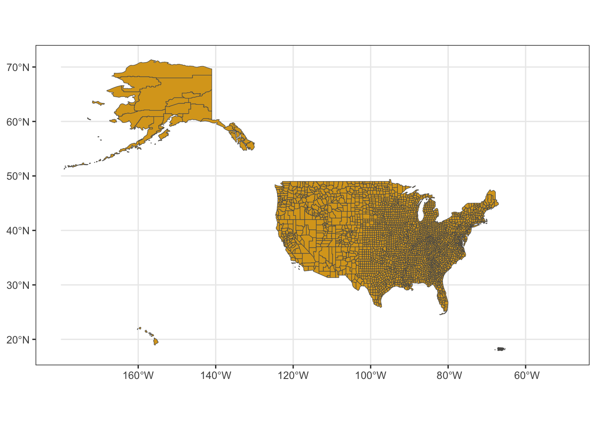
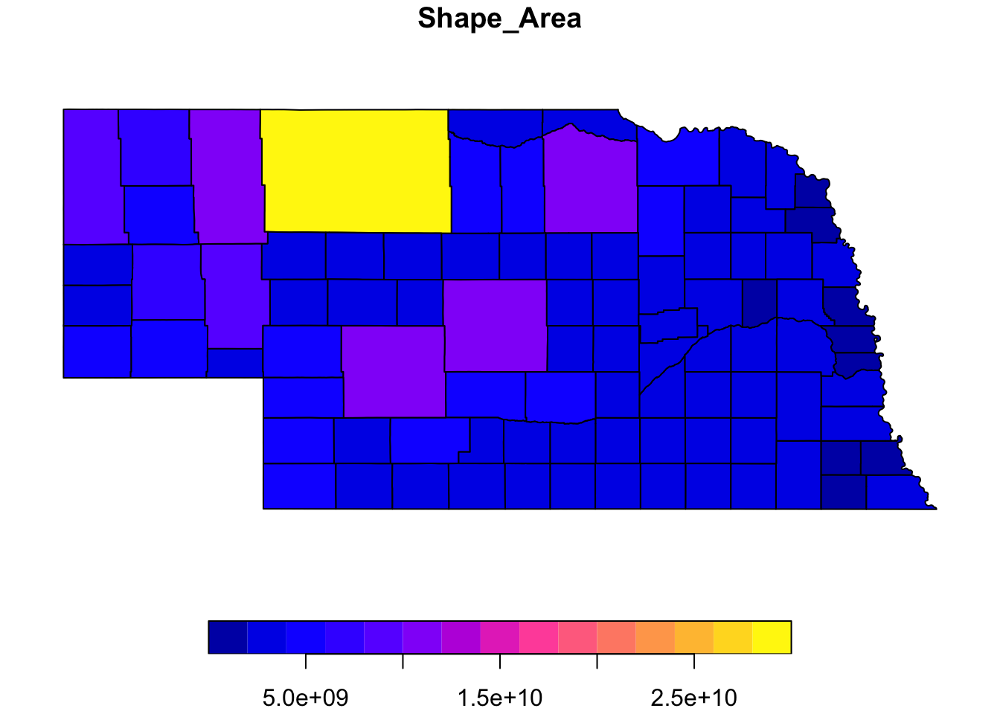

Mini-Module: Making Maps
Dai Shizuka
updated 11/04/25
Using sf by downloading shapefile and use it.
library(tidyverse)## ── Attaching core tidyverse packages ──────────────────────── tidyverse 2.0.0 ──
## ✔ dplyr 1.1.4 ✔ readr 2.1.5
## ✔ forcats 1.0.0 ✔ stringr 1.5.2
## ✔ ggplot2 4.0.0 ✔ tibble 3.3.0
## ✔ lubridate 1.9.4 ✔ tidyr 1.3.1
## ✔ purrr 1.1.0
## ── Conflicts ────────────────────────────────────────── tidyverse_conflicts() ──
## ✖ dplyr::filter() masks stats::filter()
## ✖ dplyr::lag() masks stats::lag()
## ℹ Use the conflicted package (<http://conflicted.r-lib.org/>) to force all conflicts to become errorslibrary(sf)## Linking to GEOS 3.13.0, GDAL 3.8.5, PROJ 9.5.1; sf_use_s2() is TRUEe.g., I downloaded US county data from US census bureau: https://www.census.gov/geographies/mapping-files/time-series/geo/carto-boundary-file.html
us_shp=st_read("data/cb_2018_us_county_20m/cb_2018_us_county_20m.shp")## Reading layer `cb_2018_us_county_20m' from data source
## `/Users/dshizuka2/Documents/GitHub/RCourse/data/cb_2018_us_county_20m/cb_2018_us_county_20m.shp'
## using driver `ESRI Shapefile'
## Simple feature collection with 3220 features and 9 fields
## Geometry type: MULTIPOLYGON
## Dimension: XY
## Bounding box: xmin: -179.1743 ymin: 17.91377 xmax: 179.7739 ymax: 71.35256
## Geodetic CRS: NAD83ggplot() +
geom_sf(data=us_shp, fill="goldenrod") +
coord_sf(xlim=c(-180,-50)) +
theme_bw()
co_data=read.csv("data/co-est2024-alldata.csv")Mapping county data on map of Nebraska
downloaded NE counties data from https://www.nebraskamap.gov/datasets/county-boundaries-2/explore
ne=st_read("data/NE_County_Boundaries/County_Boundaries.shp")## Reading layer `County_Boundaries' from data source
## `/Users/dshizuka2/Documents/GitHub/RCourse/data/NE_County_Boundaries/County_Boundaries.shp'
## using driver `ESRI Shapefile'
## Simple feature collection with 93 features and 7 fields
## Geometry type: POLYGON
## Dimension: XY
## Bounding box: xmin: -11583190 ymin: 4865930 xmax: -10609650 ymax: 5312216
## Projected CRS: WGS 84 / Pseudo-Mercatorhead(ne)## Simple feature collection with 6 features and 7 fields
## Geometry type: POLYGON
## Dimension: XY
## Bounding box: xmin: -11583190 ymin: 4916973 xmax: -10890370 ymax: 5226775
## Projected CRS: WGS 84 / Pseudo-Mercator
## OBJECTID Cnty_Name Cnty_No CountyFIPS GlobalID
## 1 1 Adams 1 001 {16352331-3262-4EBB-A789-263D6FDBEBB3}
## 2 2 Antelope 2 003 {FA9D8609-F002-4003-AF46-CE1F04A2B936}
## 3 3 Arthur 3 005 {FF27D2CA-CA67-4D69-8720-0EF86DB743E5}
## 4 4 Banner 4 007 {85111E3B-7990-4C93-A22A-5941EBEC0EBF}
## 5 5 Blaine 5 009 {AA433830-4A29-4E78-8410-A51CD16A1136}
## 6 6 Boone 6 011 {7525569E-EDEB-4C3D-B8B5-E3F2F666F8C7}
## Shape_Leng Shape_Area geometry
## 1 201309.1 2531755015 POLYGON ((-10940269 4967940...
## 2 260687.1 4052249963 POLYGON ((-10890881 5226775...
## 3 232240.9 3326494107 POLYGON ((-11352965 5122450...
## 4 242685.9 3451998712 POLYGON ((-11583096 5115840...
## 5 232721.2 3342160310 POLYGON ((-11097092 5173901...
## 6 233170.1 3197113116 POLYGON ((-10890751 5148454...ne_full2024=ne %>% mutate(CountyFIPS=as.numeric(CountyFIPS)) %>% left_join(co_data %>% filter(STNAME=="Nebraska"), by=join_by("CountyFIPS"=="COUNTY"))ggplot() +
geom_sf(data=ne_full2024, aes(fill=POPESTIMATE2024)) +
theme_bw()
ggplot() +
geom_sf(data=ne_full2024, aes(fill=RBIRTH2024)) +
theme_bw()
unl=data.frame(long=693904.69351446, lat=4521004.547643)
ggplot() + geom_sf(data=ne_full2024, aes(fill=NPOPCHG2024)) + theme_bw() + geom_point(data=unl, aes(x=long, y=lat))